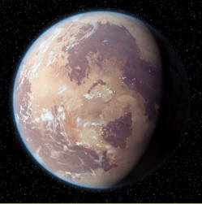

| Tatooine |  |
| Nombre: | {{planet.name}} |
| Periodo rotación: | {{planet.rotation_period}} |
| Periodo orbitacional: | {{planet.orbital_period}} |
| Diametro: | {{planet.diameter}} |
| Clima: | {{planet.climate}} |
| Gravedad: | {{planet.gravity}} |
| Terreno: | {{planet.terrain}} |
| Superficie del Agua: | {{planet.surface_water}} |
| Población: | {{planet.population}} |